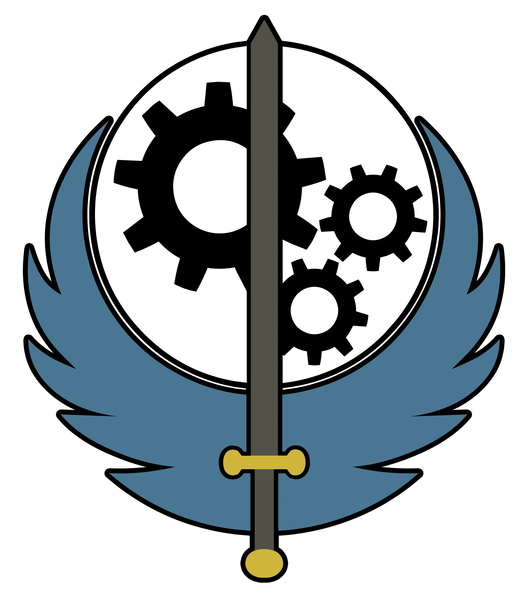
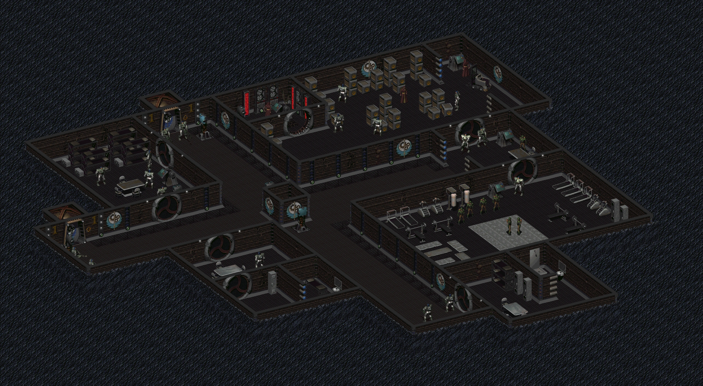
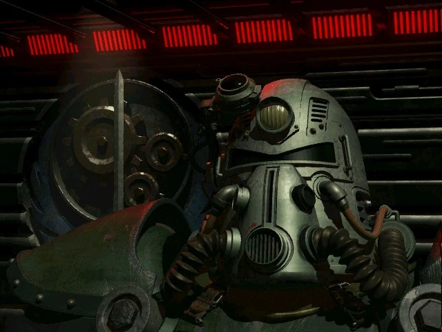
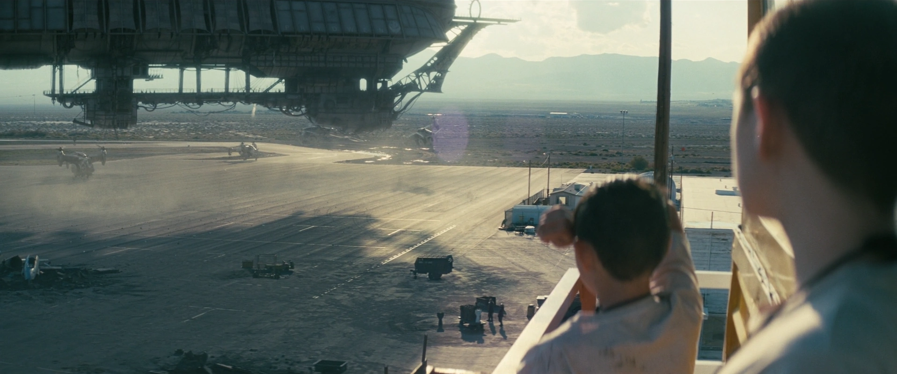
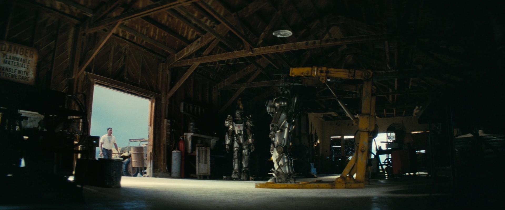
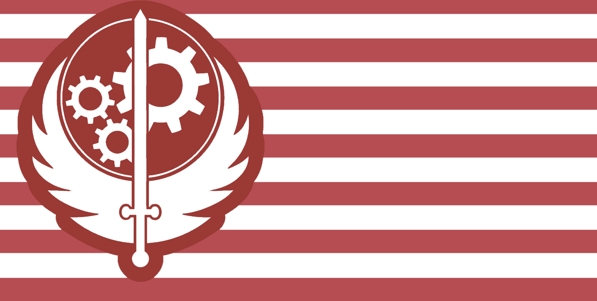
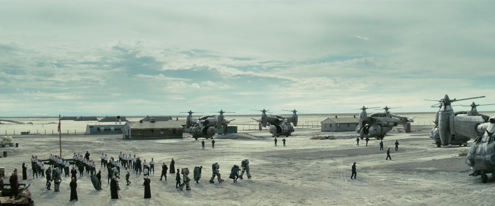
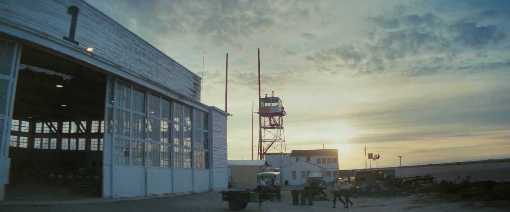
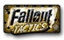

Brotherhood of Steel
ブラザーフッド・オブ・スティール
ブラザーフッド・オブ・スティール (Brotherhood of Steel / しばしばBoSと略される) は、大戦（Great War）直後のアメリカ合衆国において、生き残ったアメリカ軍（United States Armed Forces）のメンバーおよび政府支援の科学者たちによって設立された、半宗教的・テクノクラート的（技術至上主義的）な準軍事教団です。カリフォルニアを起源とするこの組織は、かつてのアメリカ大陸の全土にわたって数多くの支部（チャプター）を設立し、2290年代までには多くの地域において支配的な勢力となりました。
ブラザーフッドの本来の目的は、高度なテクノロジーを保存し、その使用を規制することでした。これは「人類は自らを滅ぼす手段を委ねるほど信頼に足る存在ではない」と彼らが信じており、再び起ころうとしている世界滅亡を防ぐために危険なテクノロジーを独占・管理する必要があるためです。彼らは比較的孤立主義的な傾向がありますが、それでもなおウェイストランドの歴史において最も重要な組織の一つであることを証明してきました。もっとも、彼らの力、影響力、そして教義（ドクトリン）は、支部ごとによって大きく異なります。
ブラザーフッドは、Falloutシリーズのほぼすべてのゲームおよび派生作品に何らかの形で登場しています。この文章は、シリーズ全体にわたって登場するブラザーフッド・オブ・スティールの概要と、その教義や方針の進化の歴史に焦点を当てています。
背景 (Background)
マリポサの反乱
2077年10月、マリポサ軍事基地（Mariposa Military Base）の警備に就いていたアメリカ陸軍スパインブレーカー中隊の兵士たちが、秘密裏に行われていた恐るべき真実を発見しました。ロバート・アンダーソン主任研究員をはじめとする基地駐留のWest-Tek社の科学者たちが、連邦政府（のちのエンクレイヴ構成員）の命令により、軍の捕虜を用いて強制進化ウイルス（FEV）の人体実験を行っていたのです。

部隊の指揮官であったロジャー・マクソン大尉 (Captain Roger Maxson) は激怒しました。彼は即座に部下たちを率いてマリポサで事実上の軍事クーデターを起こし、アンダーソンを含む関与した科学者全員を処刑しました。10月20日、マクソンは軍の通信機を使ってアメリカ陸軍最高司令部に直々に呼びかけ「分離独立（Secession）」という形での反逆を宣言しました。しかし、すでに全世界のシステムと政府機関は崩壊寸前であり、マクソンの反逆宣言に対する応答は一切ありませんでした。
3日後の2077年10月23日、大戦（The Great War）が勃発し世界中で核兵器が降り注ぎましたが、マリポサ軍事基地は地下深くの防染構造のおかげで奇跡的に核の炎から生き延びました。
私、ロジャー・マクソン大尉（認識番号072389）は、この出来事が公式の軍の記録に残る見込みがないため、このログを開始する。数日前、私が部下に命じてここの科学班を尋問させたところ、予想をはるかに超える恐ろしい事態が判明した。
彼らは軍の捕虜を使って何らかの病気の実験を行っている。彼らが「FEV（Forced Evolutionary Virus）」と呼ぶものだ。この研究所で何が起きているかの全容を把握するため、私は科学者の一人を尋問した。彼の名前はアンダーソンといい、彼らの司令官であるらしい。
（中略）
彼らがあの哀れな人々に何をしていたのか、自分の目で部屋を見るまで信じられなかった。あれを聞いた兵士の一人など、我慢できずにその場で科学者の一人を撃ち殺してしまったほどだ。
私を含めて、何だか心が麻痺してしまったような感覚だ。今ここから逃げ出さずになんとか持ち堪えられているのは、軍の規律のおかげだろう。兵士たちは今、何か血を求めているように感じる。
みんな私に答えを求めているが、私はどうすればいいのか分からない。
初期のエンクレイヴとの対立
大戦後、カリフォルニアの「ロスト・ヒルズ（Lost Hills）」へと移動（後に「大出エジプト / Great Exodus」と呼ばれる）を果たし、ブラザーフッド・オブ・スティールを設立した後、彼らは2241年に西海岸において初めて「エンクレイヴ（The Enclave / 旧アメリカ合衆国政府の残党）」との武力衝突に入りました。
エンクレイヴが核の灰から姿を現し始めた時、ブラザーフッド・オブ・スティールはニュー・カリフォルニア（New California）にいくつかの監視拠点を再稼働させ、彼らの活動を監視し、その目的を探ろうとしました。この時期、B.O.S.は「選ばれし者 (Chosen One / Fallout 2の主人公)」に依頼し、ナヴァロ（Navarro）空軍基地に潜入してエンクレイヴの改良型ベルチバードの設計図を回収する任務を与えています。
後にNCR-ブラザーフッド戦争中にも両者の衝突が示唆されています。2246年以降にNCRの手によってナヴァロが陥落・壊滅した後、ブラザーフッド・オブ・スティールは公然とエンクレイヴの残党を狩り立て、西海岸から完全に殲滅する行動を開始しました。
※元エンクレイヴ軍人のアーケイド・ガノンの証言：「ナビゲートの指揮系統が崩壊した後、NCR軍がナヴァロを制圧するのは時間の問題だった。逃げ遅れた者はNCRに殺された。逃げ延びた者の一部でさえも、やがてブラザーフッド・オブ・スティールに追い詰められ、狩られていった」
NCR-ブラザーフッド戦争
2250年代から2260年代終わりにかけて、ブラザーフッドは巨大な国家へと成長した新カリフォルニア共和国（NCR / New California Republic）との戦争状態に突入しました。技術の保護と独占を掲げ、高度な軍事装備を見境なく「回収」しようとするB.O.S.と、技術を復旧させてインフラとして活用しようとするNCRとの対立は必然でした。
紛争の初期、圧倒的なパワーアーマーの性能、高度な軍事技術、そして厳しい軍事訓練を受けたブラザーフッドは、NCRを力で圧倒しました。しかし、時間が経つにつれ、圧倒的な人口の差が最終的にブラザーフッドを数の暴力で打ち負かすことになります。
ブラザーフッド・オブ・スティールはその閉鎖的な血族主義により、人口規模がごくわずかしかありません。戦場で死亡した1人の兵士を補充するために数十年を要するB.O.S.に対し、NCRは数十人の兵士を翌日には前線に投入することができたのです。
結果として、ブラザーフッドの多くの支部が壊滅し、各地のバンカーも破壊されました。B.O.S.の残存勢力（ロスト・ヒルズ本部周辺など）はバンカーの奥深くへの撤退と隠遁を余儀なくされました。

キャピタル・ウェイストランド (Fallout 3)
2254年後半、長老評議会（The Elder Council）により組織された東海岸への遠征軍は、かつてのワシントンD.C.（キャピタル・ウェイストランド）を目指して出発しました。この遠征軍はパラディンであるオーウェン・リヨンズ (Owyn Lyons) に率いられていました。
彼らの主な任務は、東海岸にあると思われる未発見の高度な技術を探索すること、西海岸の活動報告に上がっていた「スーパーミュータント」の活動を調査すること、そして可能であれば中西部の支部（Fallout Tacticsの大墜落事故の生存者）と再連絡を取ることでした。
2255年に彼らはピッツバーグの廃墟（The Pitt）に到達し、そこを支配していたレイダーたちの大規模な粛清（スコージ・オブ・ザ・ピット）を行いました。この戦いで彼らは20人近くの子供たち（後の「リヨンズ・プライド」のメンバーや、パラディンとして名を馳せるアーサー・マクソンやサラ・リヨンズの世代）を保護し、B.O.S.のイニシエイトとして迎え入れました。
やがて彼らはワシントンD.C.の廃墟へ到着し、国防総省「ペンタゴン」の廃墟を発見しました。ペンタゴンの地下で彼らは、戦前の巨大な二足歩行決戦兵器『リバティ・プライム（Liberty Prime）』を見つけ出します。リヨンズのこの偉大な功績により、西海岸のエルダー評議会は彼を公式に「エルダー」へと昇格させ、その分遣隊は正式に「東海岸支部（The East Coast chapter）」という新たな独立チャプターとして認定されました。
彼らはペンタゴンを要塞「シタデル（The Citadel）」として強固に作り変え、東海岸の拠点としました。
リヨンズ・ドクトリンの分裂 (Brotherhood Outcasts)
しかし、エルダー・リヨンズの心境は、キャピタルの過酷な現状を見て変化していきました。D.C.エリアはVault 87から湧き出るスーパーミュータントの大群に蹂躙されており、一般の人々が次々と殺領されていました。
リヨンズは「技術の回収」というB.O.S.本来の第一任務を後回しにし、「ウェイストランドの人々をミュータントの脅威から守り抜く」という極端な博愛主義（リヨンズ・ドクトリン）を採用しました。これにより彼らの力は治安維持のために大きく分散することになり、兵士の被害は増大しました。
西海岸の本部は再三にわたり本来の使命に戻るよう警告しましたが、リヨンズがこれに従わなかったため、ついに西海岸は東海岸支部への補給と通信を完全に遮断しました。
また、リヨンズの部下たちの中にも「これではただの民間人保護ボランティアであり、本来のB.O.S.の崇高な使命から外れている」と激しく反発する者たちが現れました。最終的にディミトリ・キャスディン護民官をはじめとする一部の保守派メンバーたちがシタデルから離反し、アウトキャスト（Brotherhood Outcasts / 異端者）を名乗る別の集団として分離独立してしまいました。
プロテクター・キャスディンはリヨンズの新しい「博愛方針」に最後まで反対し続けた。彼は「我々は荒野の守護者ではない。技術の守護者であるはずだ」と主張し続けたが、結局その声は届かなかった。彼は自分の考えに賛同する者たち（およそ50名以上の熟練したパラディンやスクライブ）を引き連れ、ある夜、アーマーと武器を大量に持ち出して要塞から去っていった。
モハビ支部 (Fallout: New Vegas)
西海岸本部からの指示を受けた別の部隊が、ネバダ州周辺を探索するために派遣されました。彼らはそこを「モハビ・ウェイストランド」と呼びました。
エルダー・エライジャ（Elder Elijah）の指揮下にあったモハビ支部は、「フーバー・ダム」という巨大な施設とその電力を狙い進出して北上中の新カリフォルニア共和国（NCR）の軍勢と最終的に激突しました。
エライジャの判断により、モハビ支部は戦前の巨大な太陽熱発電所である「HELIOS One（ヘリオス・ワン）」を本拠地とし、そこで発掘した軌道レーザー兵器『アルキメデスII』を起動してNCRを焼き払うことを計画しました。しかし、数と物量で圧倒的に優位に立つNCR軍がHELIOS Oneを完全包囲し、大規模な「HELIOS Oneをめぐる防衛戦」が勃発します。
激戦のさなか、不可解なことに最高司令官であるエルダー・エライジャは突如として戦線を放棄し、誰にも行き先を告げることなく逃亡（脱走）してしまいました。
指揮官を失ったB.O.S.のパラディンたちは次々とNCRの圧倒的な銃火に倒れていき、部隊の半数以上を失う壊滅的な損害を受けました。残された指揮系統を引き継いだパラディン（当時）ノーラン・マクナマラは撤退命令を下し、生き残ったわずかな隊員たちを率いて、目立たない「ヒドゥンバレー（Hidden Valley）」の地下バンカーへと逃げ込みました。
ミッションコード：XV-56
一時パスワード：Lives to fight another day（生き延びて再び戦うために）
概要：パラディン・マティズおよびランダー、君たちはロケット施設の残骸である「REPCONN本部」の調査を命じる。一次目標は戦前の航空宇宙技術に関する文書やデータを入手すること。二次目標として、将来の回収計画のために施設内の追加アイテムのリストを作成せよ。
マクナマラ
これ以降、モハビのB.O.S.はマクナマラの極端な閉鎖方針の元、地上に出ることを固く禁じられ、静かに地下バンカーの奥深くで「緩やかな死」を待つだけの組織へと没落していきます。
インスティチュートとの紛争 (Fallout 4 / 連邦)
2280年代、東海岸においては大きな変化がありました。エルダー・オーウェン・リヨンズが自然死した後、その娘であるサラ・リヨンズがエルダーの座を引き継ぎましたが、彼女もまた戦闘中に若くして戦死してしまいました。
リヨンズ親子という強力なカリスマを失った後、東海岸支部は指導者層が無能なエルダーたち（不名誉な解任を受けた者も含む）に次々と交代する混乱期に陥り、組織としてはかつてないほど弱体化しました。
この危機を救ったのが、ロジャー・マクソンの最後の血族である若き天才、アーサー・マクソンでした。
私がどれほどアーサーにプレッシャーを与えているか、心配になることがある。彼はまだほんの子供だというのに、B.O.S.のすべての人々が、彼がまるで真の救世主であるかのように一挙手一投足を見つめている。彼がマクソンの血を引いているというただその一点だけでだ。
西海岸からの報告によると、本部では彼に関するカルト的な信仰まで生まれているらしい。これは非常に危険な傾向だ。
— エルダー・オーウェン・リヨンズ
アーサー・マクソンはわずか16歳にして戦場で超人的な活躍を見せ（単身でのデスクロー討伐、スーパーミュータントの一大拠点の制圧など）、分裂していた「ブラザーフッド・アウトキャスト」のリーダーとも交渉し、彼らを再び東海岸支部へ合流・再統合させるという歴史的な偉業を成し遂げました。西海岸の最高評議会も彼の功績を認め、アーサー・マクソンを正式に「エルダー」として承認しました。こうして東海岸支部は一つの巨大な軍事国家として生まれ変わりました。
2287年、エルダー・マクソンはマサチューセッツ州（連邦 / The Commonwealth）に存在する「インスティチュート（The Institute）」と呼ばれる地下組織が、人間そっくりの「人造人間（Synth）」を造り出しているという事実を知ります。
彼はこれを「人類を滅ぼすテクノロジーの暴走」であると激しく非難し、インスティチュートを完全に破壊するための大規模な討伐軍の派遣を決定します。
彼は巨大な飛行空母『プリドゥエン（The Prydwen）』を建造し、圧倒的な数のベルチバードやパラディン部隊を連邦へと進軍させました。ボストン空港を拠点とし、彼らは現地でスーパーミュータントやレイダー、そしてインスティチュートとの総力戦を展開しました。

アパラチアの第一・第二遠征軍 (Fallout 76)
西海岸での創設直後である2070年代後半〜2100年代にかけて、ロジャー・マクソンは軍の通信衛星網を通じて全米の生き残った軍事部隊と連絡を取り、「ブラザーフッド・オブ・スティールへの合流」を呼びかけていました。
これに応じたのが、ウェストバージニア州（アパラチア）で活動していた米軍レンジャー部隊「タガーディズ・サンダー（Taggerdy's Thunder）」でした。
部隊の指揮官であるエリザベス・タガーディ（パラディン・タガーディ）は、旧友であるマクソンの求めに応じて部下たちをB.O.S.の「アパラチア支部（第一遠征軍）」として再編しました。彼らはアパラチアに蔓延する「スコーチ病（Scorched Plague）」という恐ろしい感染症と、その元凶である巨大な変異コウモリ「スコーチビースト（Scorchbeast）」と激しい死闘を繰り広げました。
彼らは最終的に、スコーチの巣窟に直接核兵器を撃ち込んで病ごと焼き払うという最終作戦を計画しましたが、他の生存者勢力（レスポンダーやフリー・ステイツなど）との協力関係が構築できず、最終的にグラスキャバーンの底で全滅してしまいました。
ロジャー・マクソン: リジー、これは緊急のことか？
タガーディ: 緊急という言葉では足りないわ、ロジャー。アパラチア全域がパニックに陥っているの。彼らを全滅させる必要がある。私の部隊を動員して核ミサイルのサイロを制圧するわ。（中略）
ロジャー・マクソン: それはダメだ！
タガーディ: 他に選択肢がないのよ、ロジャー。
ロジャー・マクソン: 君の部隊がやろうとしていることは、人類を壊滅させたのと同じ狂気の沙汰だ。我々はあの過ちを繰り返さないと誓ったはずだ。ブラザーフッドと名乗るなら例外はない。
タガーディ: 世界はいずれスコーチに焼き尽くされる。アパラチアがその証拠よ！
ロジャー・マクソン: リジー、だめだ。我々は過去の兵器に頼るのではなく、この問題に対する別の解決策を見つけなければならない。西海岸から追加の資源を送る……私の決定は変わらないぞ。いいな？
その後、西海岸本部からの連絡が途絶えたアパラチアの生き残りを調査するため、2103年に「第二遠征軍（The First Expeditionary Force）」がカリフォルニアから派遣されました。
パラディン・レイラ・ラハマニ、ナイト・ダニエル・シン、スクライブ・オデッサ・バルデスに率いられたこの小部隊は、旧「アトラス観測所」を占拠して『アトラス砦（Fort Atlas）』と改名し、そこを拠点にアパラチア支部の再建を目指しました。
しかし、道中でラハマニが民間人を守るために無断でB.O.S.の武器を武装勢力に渡してしまった事件をきっかけに、本部の命令を絶対視する「シン」と、現地の事情に合わせてウェイストランダー達を救うべきだと主張する「ラハマニ」の間で激しい教義の対立が発生。最終的に彼女らは西海岸との通信装置を自ら破壊し、事実上カリフォルニア本部から完全に独立（孤立）する道を選びました。
ブラントへ、
私がブラザーフッドに加わったとき、あなたが「正気じゃない」と言ったのを覚えてる？あれは彼らが単なる狂信者の集団だと思ったからよね。でも彼らはただの人よ。目的を持った人たち。アトラスがそれを教えてくれた。
彼らは私のことを、重要な存在であるかのように扱ってくれる。あなたが一度もしてくれなかったように。
これからはここで生きていくわ。だから、次に私を探しに来る時は、ブラントに撃たれる覚悟をしておいて。
（※このように、民間人上がりで入隊した新兵の中には、B.O.S.の教義よりも組織内の『居場所』として愛着を持つ者も多かれ少なかれ存在していました）
TVシリーズにおけるB.O.S. (2296年)
Amazon Primeの『Fallout』実写テレビドラマシリーズ（時代設定としては最も未来である2296年）に登場するB.O.S.は、かつてのシリーズからさらにカルト色が強まった、教条的で冷酷な騎士団として描かれています。
西海岸における最大の敵対国であったNCR（新カリフォルニア共和国）が、首都シェイディ・サンズの核攻撃による壊滅で事実上崩壊したことにより、B.O.S.は再び西海岸で大きな軍事力を持つようになりました。
TV版のB.O.S.は「エルダー・クレリック・クイントス（Cleric Quintus）」という指導者のもと、サンフェルナンド・バレーなどの荒野に拠点を構え、宗教的な儀式（騎士への香の振りまきや、身体的な苦行を含む過酷な訓練など）を日常的に行っています。連邦でアーサー・マクソンが運用していた飛行空母プリドゥエンと同型の姉妹船である『カサウンディン（Caswennan）』を運用しており、強力なベルチバードとパワーアーマー部隊を擁しています。
ドラマ版では、主人公の一人である「マキシマス（Maximus）」がB.O.S.のイニシエイト（後にスクワイア）として登場します。この時代のB.O.S.はかつての「正義の味方」といったスタンスから離れ、上官による絶対的かつ暴力的な支配、スクワイアに対する非人道的な扱い、権力闘争による裏切りなど、軍組織としての腐敗と過剰なカルト化が顕著に描かれています。
社会と階層 (Society and Structure)
ブラザーフッド・オブ・スティールは軍国主義的かつ封建主義的な側面を強く持った階級社会です。彼らの憲法である「コーデックス（The Codex）」が規則、法令、倫理、さらには日々の生活の細かいスケジュールまでを規定しています。
コーデックスの中でも最も重視される教義が「チェイン・オブ・コマンド（Chain That Binds / 束縛の鎖）」です。これは絶対的な上意下達の命令系統を意味し、「下位の者は直属の上官にのみ報告し、上官の命令にのみ従う。上層部が下位の者を直接飛び越えて指揮をしてはならない」という厳しい規律です（モハビ支部では、この規則を違反したことでクーデターの原因となります）。
階級制度 (Ranks)
B.O.S.は明確な役割と兵科によって分けられています。
- エルダー (Elder) / ハイ・エルダー (High Elder)
組織の最高意思決定者。エルダーは各支部の長であり、カリフォルニアにある西海岸のロスト・ヒルズ本部にはさらに上の「エルダー評議会（Elder Council）」と「ハイ・エルダー」が存在し、本来は全米の支部を統括しています。ただ、後年になると遠方の支部（東海岸など）は事実上独立状態となっています。 - クレリック (Cleric)
TVドラマシリーズ（2296年）で新たに登場する役職。彼らはより宗教的・カルト的な指導者としての役割を担い、軍人のみならず信仰と規律を通じて組織を統制する上位階級です。エルダーとほぼ同列、あるいは独自の方針を示す権力を持っています。 - パラディン (Paladin)
戦闘部隊の最高峰であり経験豊富な戦士。独立した部隊の指揮官や作戦のリーダーを任されます。最高級のパワーアーマーを身にまとい、ウェイストランドにおいて彼らに1対1で勝てる人間はほとんど存在しません。 - ナイト (Knight)
B.O.S.の主力実戦部隊。初代マクソンの時代には「集めた技術を元に武器や防具の修理・製造を行う技術兵」としての役割が強かったのですが、時代が下るにつれて（特に東海岸では）「パワーアーマーの着用を正式に許可された前線歩兵」へと階級の意味合いが変化しました。 - ランサー (Lancer)
東海岸のアーサー・マクソン時代（FO4）に新設された航空歩兵科。空飛ぶ『ベルチバード』のパイロットや、飛行船『プリドゥエン』の運航・整備などを専門とするエリート飛行兵です。 - スクライブ (Scribe)
戦闘ではなく科学・歴史分野の頭脳を担う知識階級。戦前の文書や設計図の解読、古代技術のリバースエンジニアリング、医療、歴史の編纂などを行います（オーダー・オブ・シールド、ソード等の細かな専門区分が存在します）。彼らは基本的に後部支援ですが、技術回収のために危険な前線へ赴くこともあります。 - イニシエイト (Initiate) / スクワイア (Squire)
加入したばかりの新平、あるいは訓練生。彼らはパワーアーマーの着用を許されず、上官（ナイトやパラディン）の世話、甲冑の磨き上げ、過重な機材の運搬、過酷な体力錬成などに従事しながら、正式なナイトに昇格する日を待ちわびています。ドラマ版の「スクワイア」は特にこの下働き的な側面が強調されていました。

技術と兵器 (Technology)
ブラザーフッド・オブ・スティールが他のウェイストランド勢力に対して圧倒的な軍事的優位性を保ち続けている理由は、戦前の最新鋭技術の独占と、それを維持し運用する能力にあります。
パワーアーマー (Power Armor)
B.O.S.の代名詞とも言える主力兵器。彼らはT-51やT-60といった戦前の高度な『歩兵用強化装甲服（Power Armor）』を大量に保有し、メンテナンスする技術を持っています。これにより、彼らの少数の兵士は数百人規模のレイダーやミュータントの大群を相手に互角以上に戦うことができます。かつての西海岸では「一人前のナイトにならなければ着用できない」という決まりがありましたが、部隊によっては前線の兵士に広く支給されることもあります。
航空戦力：ベルチバードとプリドゥエン (Vertibird & Prydwen)
もともと『ベルチバード』（垂直離着陸ティルトローター機）を開発・保持していたのは敵対勢力のエンクレイヴでしたが、ナヴァロ基地の陥落後や、東海岸のアダムス空軍基地の制圧を通して、ブラザーフッドはこれらを完全に鹵獲・自力生産する技術を獲得しました。
そして東海岸のエルダー・アーサー・マクソンは、アダムス空軍基地で作戦運用可能となったこの膨大なベルチバード群を搭載するため、およそ2年の歳月をかけて超巨大な水素浮揚型飛行空母『プリドゥエン（The Prydwen）』を完成させました。これにより、彼らはアメリカ東海岸を股にかける機動展開能力と、圧倒的な航空優勢を獲得しました。TVシリーズでは同型の姉妹船である『カサウンディン（Caswennan）』も運用されています。

リバティ・プライム (Liberty Prime)
東海岸支部が地下のペンタゴン大崩落の中から発掘した、戦前の極秘・巨大二足歩行ロボット。本来の目的はアラスカ奪還（対中国戦争）のためのものだったとプログラミングされています。
彼らは科学力とDr.マジソン・リーの助けを借りてこれを復元することに成功しました。小型のレッドメネイス（核爆弾）をラグビーボール形式で投げつけ、目からは巨大なレーザービームを放つこの文字通りの最終兵器は、Fallout 3においてエンクレイヴの要塞を単機で粉砕し、Fallout 4においてはインスティチュートの地下施設へとつながる分厚い岩盤を圧倒的な一撃で焼き払いました。「共産主義は死だ（Death is a preferable alternative to Communism!）」と喋りながら進むその姿は、Falloutシリーズ屈指のインパクトを誇ります。
記録とターミナル (Terminal Entries)
ブラザーフッド・オブ・スティールはその閉鎖的な歴史ゆえに、外部に多くを語りません。彼らの真の歴史や内部の動向は、各司令部に残された軍事ネットワークのターミナル・ログを読み解くことで初めて明らかになります。
【マクソンの血統】
16歳にして……なんということだ。彼が西海岸から送られてきたのは何年も前……まだ子供のころだったのだ。エルダー・マクソンの直系、その最高指導者の血なのだから、暗殺者から身を守るために東海岸の要塞へ匿うのは理にかなっていた。
だが彼は東へ来てから、その並外れた戦士としての素質だけでなく、底知れぬ外交的カリスマをも発揮した。あの離反したアウトキャストの司令官とたった一人で渡り合い、説き伏せ、再び我々のもとに連れ戻したのだ。これで東海岸部隊の戦力は一気に膨れ上がった。
我々は長い間、『マクソン』という名前の旗印が必要だったのかもしれない。（プロクター・クィンラン）
【通信妨害】
西海岸からの通信が完全に途絶えた。もはやカリフォルニアの本部と話す術はない。パラディン・ラハマニは「送信機の修復は不可能だ」と宣言したが、私はそれが事故だったのか疑っている。我々は孤立した。
彼女はこのアパラチアの民間人を守るために、技術を守り隠すというコーデックスの教えを破り続けている。シンは激怒しているが、今となってはどうしようもない。これが彼女の狙いだったとしたら、もはや我々に未来はないのではないか。ブラザーフッドという名前に、何の意味が残るというのだ。
【事件報告 #3】
パラディンがまた1人、NCRのレンジャーパトロールと接触して死亡した。
エルダー・マクナマラの命令は明確だ。決して地表に出てはならない。我々はNCRという怪物のような数を持つ国家から隠れ続けなければならない。だが空気清浄機のフィルターは詰まりかけ、物資は減り続ける一方だ。
地表に出ればNCRの物量にすりつぶされ、地下にこもっていればやがて酸欠で死ぬ。どちらを選んでも、待っているのはモハビ支部の完全なる消滅だ。我々はあのヘリオス・ワンの敗戦で終わっていたのだ。
ギャラリー (Gallery)
ブラザーフッド・オブ・スティールの各支部や歴史に関わる画像資料群です。





Falloutシリーズといえば「青いジャンプスーツ（Vault）」と並んで、彼らブラザーフッド・オブ・スティールのパワーアーマーの存在を思い浮かべる人も多いのではないでしょうか。
マクソンの反乱から始まり、西海岸でのNCRに対する敗走と没落、そして東海岸でアーサー・マクソンが成し遂げた圧倒的なミリタリー国家への飛躍と、彼らの歴史はそっくりそのままFalloutの世界全体の歴史の流れとシンクロしています。
ただの「正義の味方」なんかじゃなく、教義に縛られて独善的で、狂信的で、時としてレイダーやスーパーミュータントよりも暴力的にテクノロジーをむしり取っていく姿勢こそが、いかにもFalloutらしくて最高にクールですよね！「Ad Victoriam！」と誇り高く叫びながらベルチバードからパワーアーマーで降下してくる彼らを見ると、やはりテンションが上がらずにはいられません。彼らなしにはこのウェイストランドは語れない、そう思わせてくれる最高の勢力だと思います。
This article was created by translating and editing Brotherhood of Steel from Nukapedia: The Fallout Wiki.
Licensed under the Creative Commons Attribution-Share Alike License (CC BY-SA 3.0).
© Overseer Mohi's Terminal — Fallout Lore Archive
コミュニティ維持のため、寄付を受け付けております。
> COMMENTS